AT A GLANCE: the five acts
The order this faction takes the galaxy in. Each act ends on a commander seat, and the seat is the only slide sequence every player of this faction sees in a fixed order.
| ACT | SYSTEM | GARRISON | SEAT | STORY BEAT | THE MORAL |
|---|
| 1 | THE PLEIADES | THE XENO | ALCYONE | The Mandate, Recited | Defence becomes occupation the moment the defended were never asked. Forty worlds protected, none risen, and the registry says so in our own hand. |
| 2 | ZETA RETICULI | THE XENO | SERPO | Forty Rings, No Sunrise | A vow to protect is void if you deferred the one world that needed it. Our seal is on the page, two hundred and nine times. |
| 3 | BARNARD'S STAR | THE PIRATES | HARBOUR NINE | The View From The Farm | From inside a fence, attendance looks exactly like ownership. The people who owe nobody anything built the sanctuary we never did. |
| 4 | TABBY'S STAR | THE XENO | THE VEIL | The Warden Comes Down | Mercy that will not act is not mercy. Doctrine said hold the ring and let the world die correctly; the Warden landed anyway. |
| 5 | THE EARTH SYSTEM | THE XENO | LUNA | The Upper Rings | Order is not obedience. Protection that has to be traced upward through three sealed seats was never protection, it was cover. |
THE PLANETARY PATH
Worlds unlock outward from the first of each system and the commander seat opens last, so this is the order the campaign is actually fought in, world by world, act by act.
ACT1
THE PLEIADES · held by THE XENO
MAIA
›
ELECTRA
›
TAYGETA
›
MEROPE
›
CELAENO
›
STEROPE
›
★ ALCYONE
››THE DEPARTURE
ACT2
ZETA RETICULI · held by THE XENO
ZETA-1 b
›
ZETA-1 c
›
ZETA-1 d
›
ZETA-2 b
›
ZETA-2 c
›
ZETA-2 d
›
★ SERPO
››THE DISCLOSURE FILES
ACT3
BARNARD'S STAR · held by THE PIRATES
BARNARD b
›
BARNARD c
›
BARNARD d
›
BARNARD e
›
BARNARD f
›
BARNARD g
›
★ HARBOUR NINE
››THE FIVE SEATS
ACT4
TABBY'S STAR · held by THE XENO
KIC-8462 b
›
KIC-8462 c
›
KIC-8462 d
›
KIC-8462 e
›
KIC-8462 f
›
KIC-8462 g
›
★ THE VEIL
››THE HARVEST REVOLT
ACT5
THE EARTH SYSTEM · held by THE XENO
EARTH
›
VENUS
›
MARS
›
CERES
›
EUROPA
›
TITAN
›
★ LUNA
››THE MIRROR TRIAL
THE OATH (campaign start)
1. Before your histories began, the Federation of Light swore the Mandate: stand between life and what hunts it, and never rule what you protect.
2. Forty worlds ring under our shield. Forty registries defended, supplied, and waiting, as the Mandate requires, to rise on their own.
3. Then a herd broke its fence. The species we deferred, eighty years running, built a fleet in one winter and came out asking questions.
4. The First Speaker has ordered the rings extended. The field commanders have begun asking what, precisely, the rings are for.
5. Go and hold the line, commander. And if you must choose between the Mandate and the people it was written for, remember which one bleeds. THE MANDATE BEGINS.
THE DEPARTURE · interstitial, straight after the oathSERAPH, The Radiant — “The Mandate, Recited”
We do not conquer. We stand between a world and what hunts it, we hand down what we safely can, and we wait for it to rise on its own. That is the Mandate. I have recited it over forty worlds. Recite it with me until you believe it, or until one of us finds out why we cannot.
The Federation claims worlds only to ring them with defence. The campaign tests whether that has ever been the whole truth.
ACT 1: THE PLEIADES garrisoned by THE XENO
Hold the Mandate's own home while something else sings in it. Every world here is an office of the Federation: the foundry that certifies protection, the registry of the forty, the ring anchor, the seed gardens, the tribunal, the deferral vaults. Retaking them means reading them, and the registry says protected forty, risen none.
THE MORAL OF THIS ACTDefence becomes occupation the moment the defended were never asked. Forty worlds protected, none risen, and the registry says so in our own hand.
MAIA
1. APPROACH
 pcut_10_light_1
pcut_10_light_1Our own foundry, and something is singing in it that is not us. Go quietly, and whatever answers, do not sing back.
2. THE GROUND
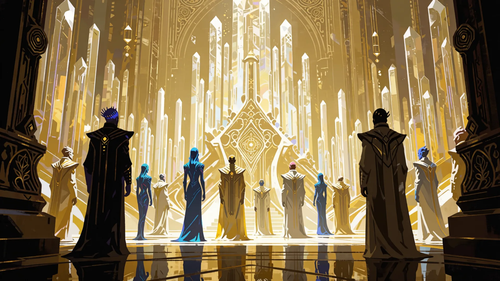
pcut_10_light_2A hall of tuned crystal pipes standing upright in nebula light, where the Federation cuts the hymns that certify a world as protected.
3. THE ASSAULT
 pcut_10_light_3
pcut_10_light_3Choir-ring emplacements braced between the pipes, and hard-light buttresses that ring aloud when they are struck. The defence and the instrument are the same object.
4. AFTERMATH
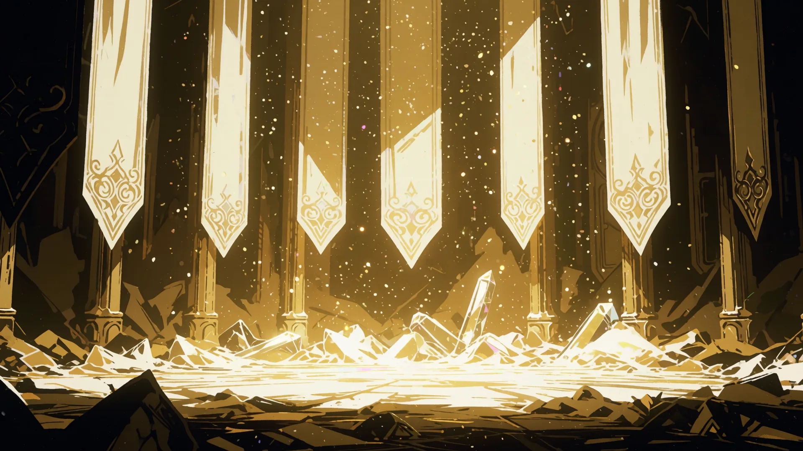
pcut_10_light_4The pipes are cracked and the hall is ours. We have certified forty worlds from this room. We could not certify this one.
5. NEW ORDER
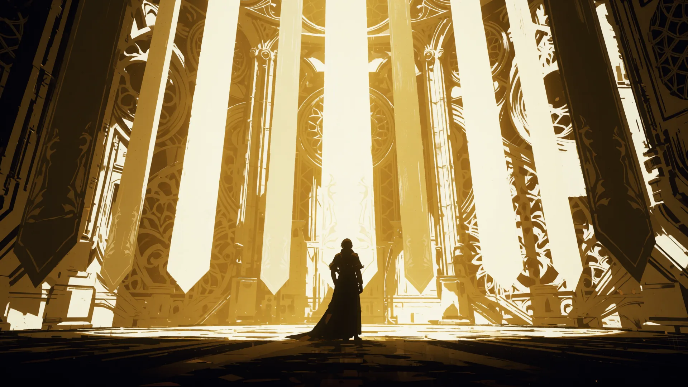
pcut_10_light_5Maia sounds again, in a register the Mandate has no notation for. The Chorus wrote it, and she will not explain the second verse.
ELECTRA
1. APPROACH
 pcut_11_light_1
pcut_11_light_1Our own archive, under a dying star, with the Compact reading our files. Whatever they have learned about us, they learned it from us.
2. THE GROUND
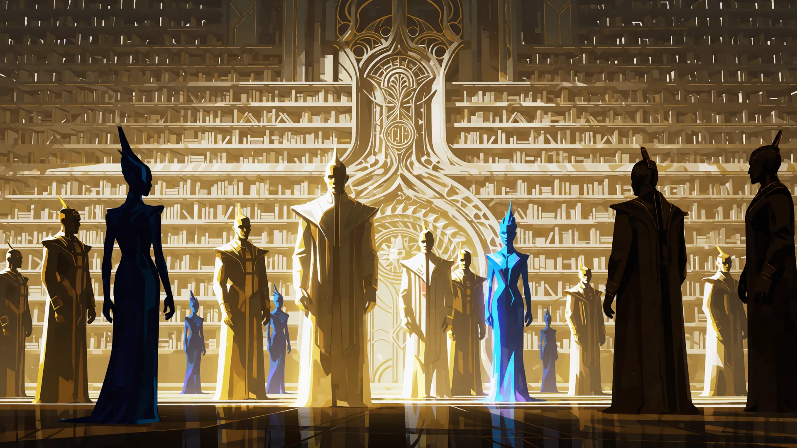
pcut_11_light_2The registry archive of the forty protected worlds, tier upon tier of light-etched shelving, under a star that is visibly going out.
3. THE ASSAULT
 pcut_11_light_3
pcut_11_light_3Buttress turrets at every tier, and reading-vault doors of hard light that seal from the inside. The archive was built to survive its own librarians.
4. AFTERMATH
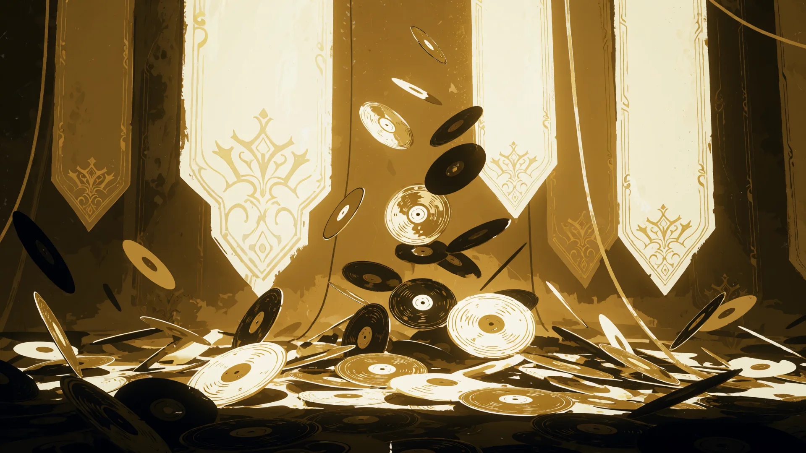
pcut_11_light_4The tiers are down. We have spent the night picking our own history off the floor, and there is a good deal of it we would rather not have read.
5. NEW ORDER
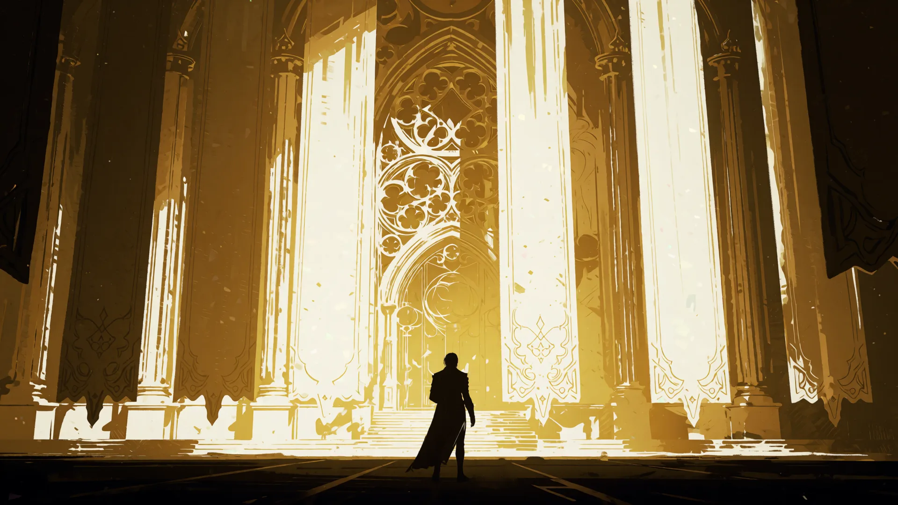
pcut_11_light_5Electra is re-shelved and the registry is open. Protected: forty. Risen: none. It reads considerably worse when anyone at all can read it.
TAYGETA
1. APPROACH
 pcut_12_light_1
pcut_12_light_1Our ring, our anchor, and somebody else holding it. A ring in the wrong hands is not a shield. It is a lid.
2. THE GROUND
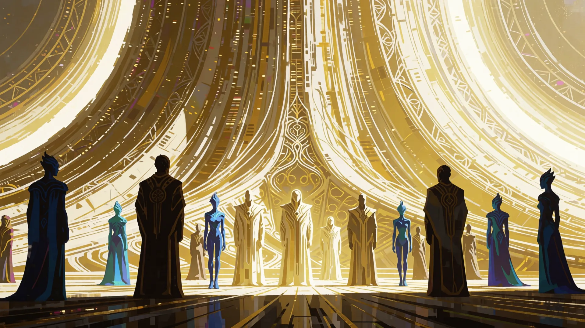
pcut_12_light_2The ground end of a planetary shield ring, where cabling the width of towers climbs out of the atmosphere, under two suns that throw every shadow twice.
3. THE ASSAULT
 pcut_12_light_3
pcut_12_light_3Anchor-mount batteries and hard-light shear walls at the base. Bring the anchor down and the ring above comes down in sections, on everybody.
4. AFTERMATH
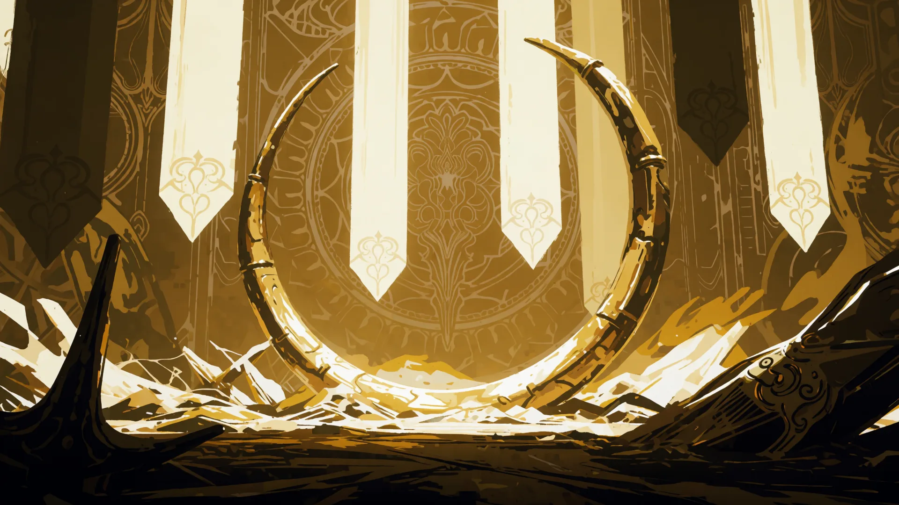
pcut_12_light_4The anchor held. We fought at the foot of our own ring to keep it standing, and the Warden has not spoken since it stopped shaking.
5. NEW ORDER
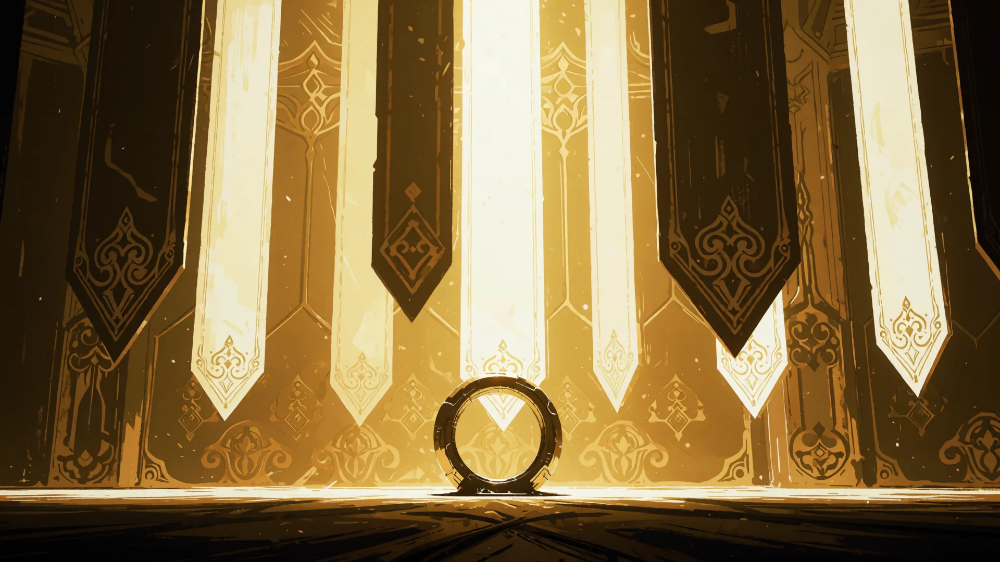
pcut_12_light_5Taygeta rings again, and it opens on request. Doctrine says a ring that opens is not a ring. Doctrine is going to have to sit down.
MEROPE
1. APPROACH
 pcut_13_light_1
pcut_13_light_1The gardens. If anything in the Mandate was ever honest, it was grown here. Do not burn the terraces. That is not a request.
2. THE GROUND
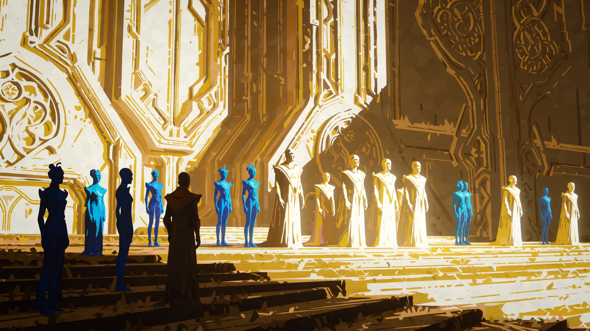
pcut_13_light_2Terraces of seed vaults growing under hard-light sun panels, in the brightest nebulosity of the cluster, where the Federation banks what a world will need if it is ever allowed to grow.
3. THE ASSAULT
 pcut_13_light_3
pcut_13_light_3Garden-wall emplacements and irrigation towers turned into firing points. Every shot fired here costs somebody a harvest ten thousand years from now.
4. AFTERMATH
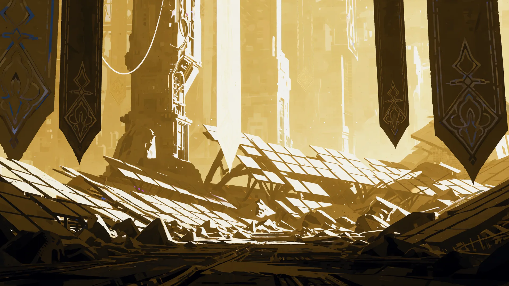
pcut_13_light_4The terraces are scorched and the vaults are whole. We chose the vaults. The Warden made that choice out loud and will answer for it out loud.
5. NEW ORDER
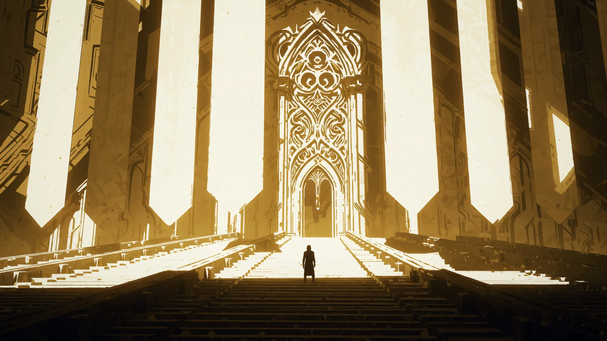
pcut_13_light_5Merope grows again, and it sends. Stored against the day a world rises, says the old liturgy. The Chorus has proposed we stop waiting for the day.
CELAENO
1. APPROACH
 pcut_14_light_1
pcut_14_light_1Our own tribunal, occupied. Every judgment the Mandate ever passed is in that room, including the ones concerning us.
2. THE GROUND
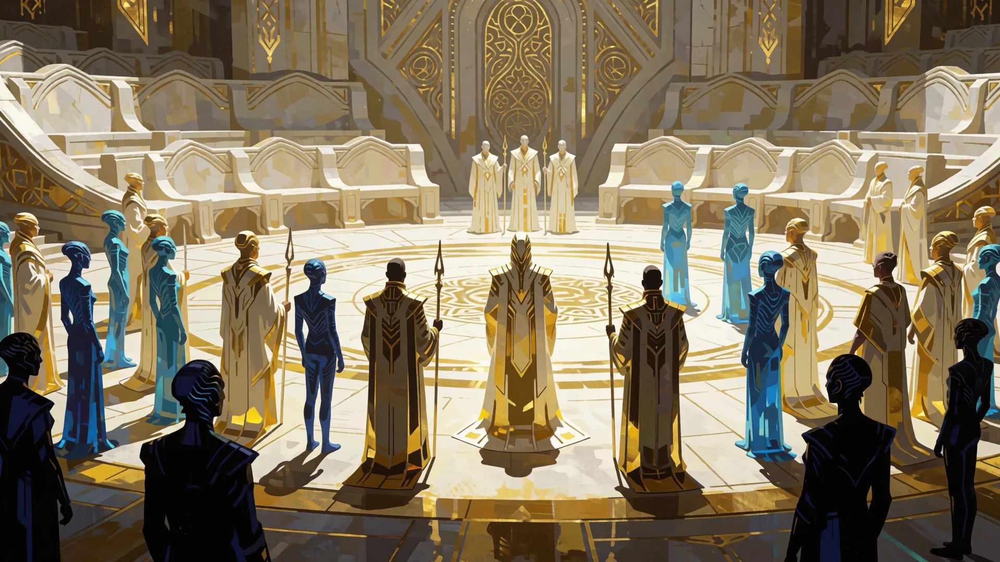
pcut_14_light_2A tribunal floor of tiered stone benches ringing an open centre, under the dimmest star of the cluster, where the Federation tries its own.
3. THE ASSAULT
 pcut_14_light_3
pcut_14_light_3Gate batteries at every entrance and hard-light barricades across the bench tiers. A court built to be defended is a court that expected to be hated.
4. AFTERMATH
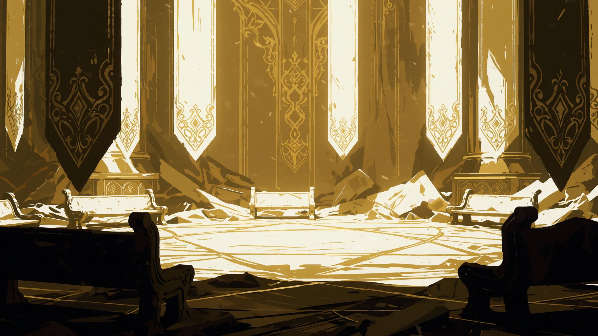
pcut_14_light_4The floor is cracked and the benches are down. We defended a court that is currently deciding whether to take the Warden his wings.
5. NEW ORDER
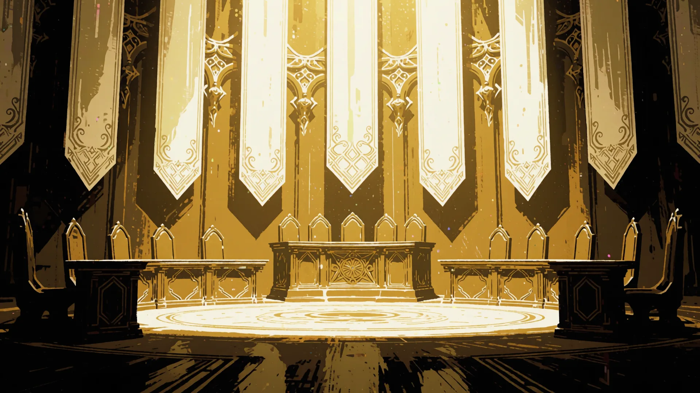
pcut_14_light_5Celaeno sits. The first case called was the deferral of Earth. The room was full, and almost none of it was ours.
STEROPE
1. APPROACH
 pcut_15_light_1
pcut_15_light_1The deferral vaults. Whatever is behind those doors, we sealed it, and the Compact is standing in front of it now.
2. THE GROUND
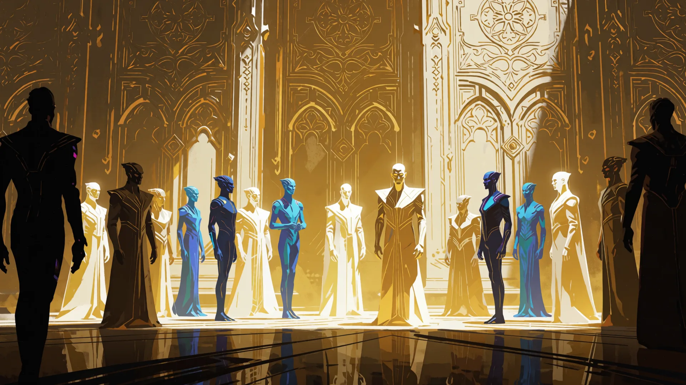
pcut_15_light_2Sunken chambers of sealed pages, every door stamped and dated and never once opened, under two dim stars that barely light the ground.
3. THE ASSAULT
 pcut_15_light_3
pcut_15_light_3Vault-door batteries and hard-light seals holding the chambers shut, maintained for a century by wardens who never read what they were guarding.
4. AFTERMATH
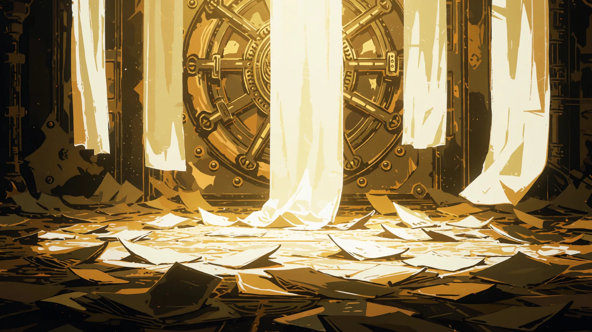
pcut_15_light_4The seals are broken. Three generations of harvest ran under the word in those pages, and every warden here has now read it.
5. NEW ORDER
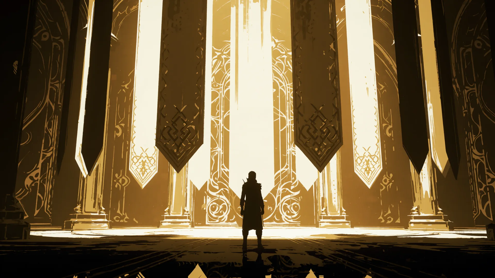
pcut_15_light_5Sterope is open, and every deferral has been copied out and sent to the world it concerned. The First Speaker has not acknowledged the transmission.
ALCYONESEAT
1. APPROACH
 pcut_16_light_1
pcut_16_light_1Our own cathedral. The seat of the Mandate in somebody else hands, and every ring above it still turning as though nothing has happened.
2. THE GROUND
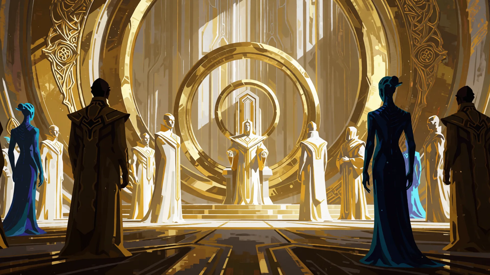
pcut_16_light_2The Cathedral of Rings, concentric circles of gold standing around an empty central floor, in the brightest light of the cluster. The First Speaker sits here.
3. THE ASSAULT
 pcut_16_light_3
pcut_16_light_3Ring-tier batteries and layered hard-light choirs turning slowly around the seat. The innermost ring has never been fired. It is about to be.
4. AFTERMATH
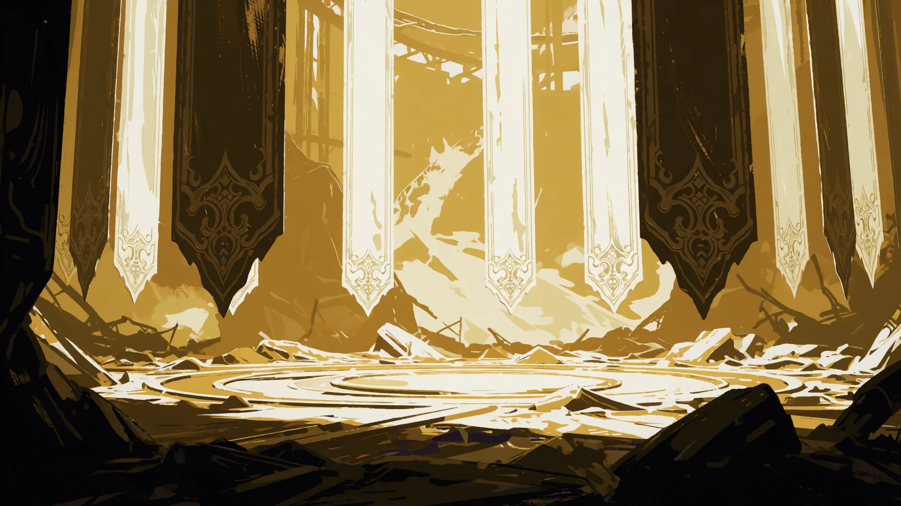
pcut_16_light_4The rings hold, barely. We fought inside our own liturgy. The First Speaker was not in the seat, and had not been for some time.
5. NEW ORDER
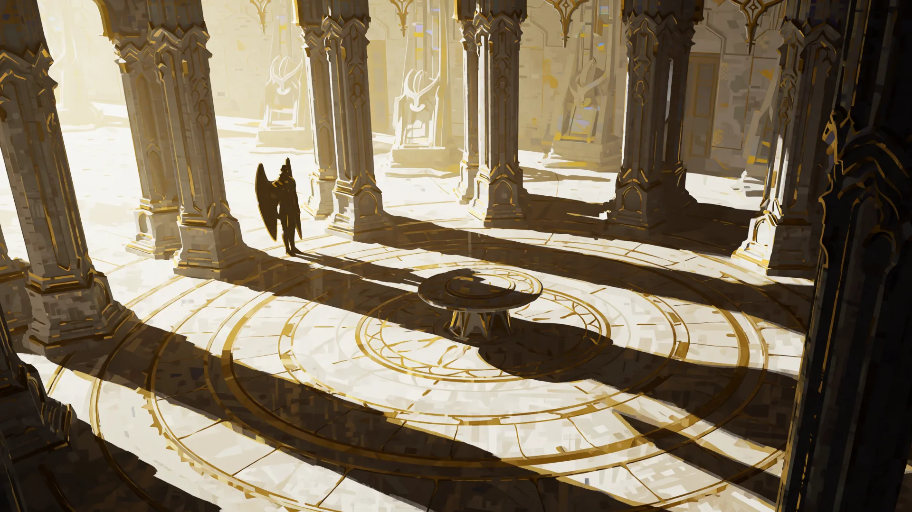
pcut_16_light_5Alcyone is ours and the seat is gone. In its place, a table. The Voice has begun asking who kept that seat warm through the centuries the First Speaker was not in it.
THE TURNINGThe Pleiades stand secured. The hymns are certified. The rings hold, as they have always held.
The Chorus pulled the registry afterwards. Protected: all forty worlds. Risen: none. She has stopped singing the second verse.
ACT 2: ZETA RETICULI garrisoned by THE XENO
The harvest, seen from the inside for the first time. Wardens who have sung the protection liturgy their whole lives carry survivors out of the pens by hand. At Zeta-2 d the yield ledger is opened and the Federation's own seal appears in it two hundred and nine times. The Mandate has no procedure for that.
THE MORAL OF THIS ACTA vow to protect is void if you deferred the one world that needed it. Our seal is on the page, two hundred and nine times.
ZETA-1 b
1. APPROACH
 pcut_20_light_1
pcut_20_light_1The pens. We flagged this world for protection in the ninth century of the Mandate and deferred it every century since.
2. THE GROUND
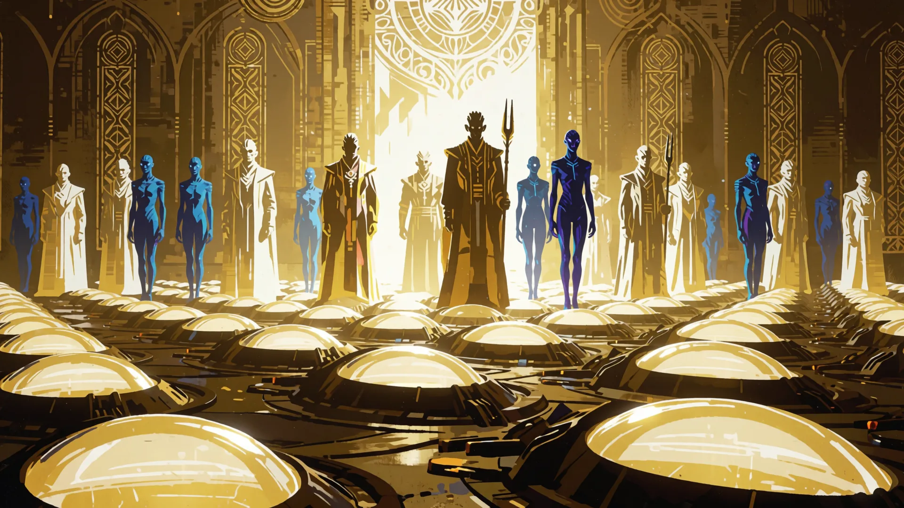
pcut_20_light_2The pens. Rows of glowing containment pods sunk into a floor of living chitin, running to the horizon in every direction, and quiet.
3. THE ASSAULT
 pcut_20_light_3
pcut_20_light_3Sphincter gates that close over the pod rows on a reflex, and growth batteries seated in the ribs of the floor itself.
4. AFTERMATH
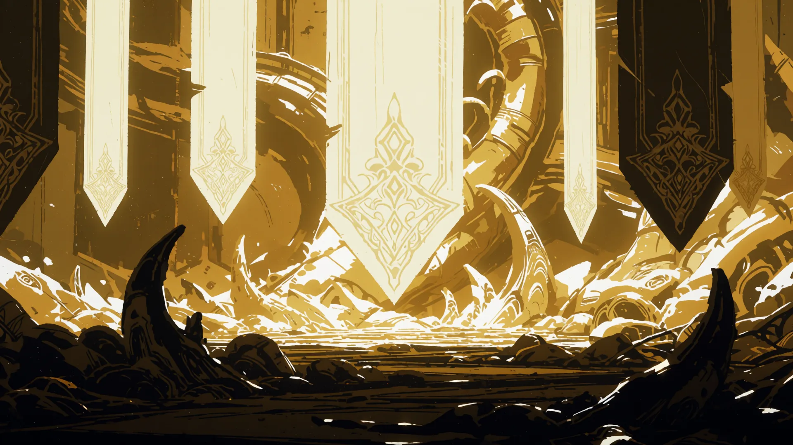
pcut_20_light_4The rows are open. Wardens who have sung the protection liturgy their whole lives are carrying survivors out by hand and not singing.
5. NEW ORDER
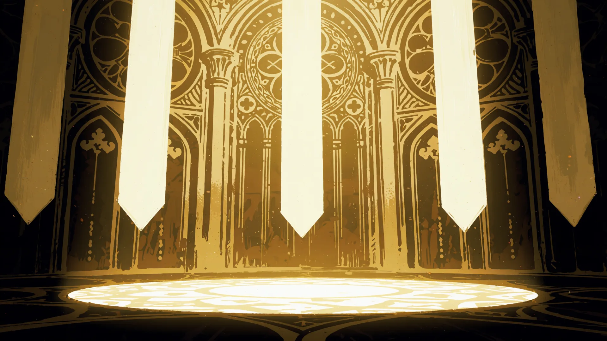
pcut_20_light_5Zeta-1 b is cleared and the pens are gone. The Chorus has entered the recovered headcount into the registry beside the word Protected.
ZETA-1 c
1. APPROACH
 pcut_21_light_1
pcut_21_light_1The rendering yards. The liturgy has a word for a place like this and the Mandate has never once had to use it aloud.
2. THE GROUND
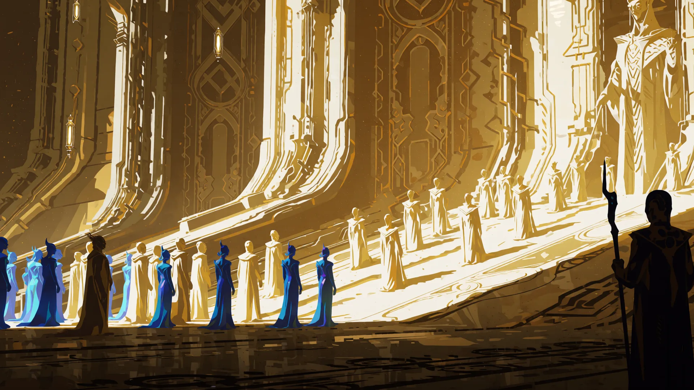
pcut_21_light_2The rendering yards, vast sloped floors where the yield is broken down, with run-off channels cut deep into the shell and running always in one direction.
3. THE ASSAULT
 pcut_21_light_3
pcut_21_light_3Yard-mouth batteries and hooked gantries that swing down across the channels, built to handle mass that does not want to be handled.
4. AFTERMATH
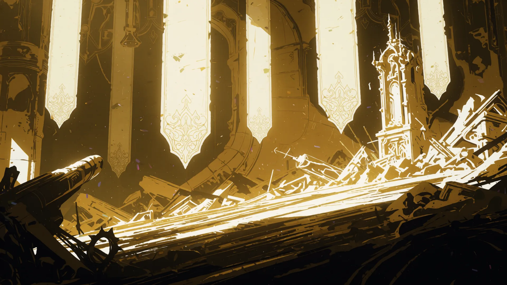
pcut_21_light_4The floors are cold and the Warden walked every channel end to end before he would certify them clear. It took him eleven hours.
5. NEW ORDER
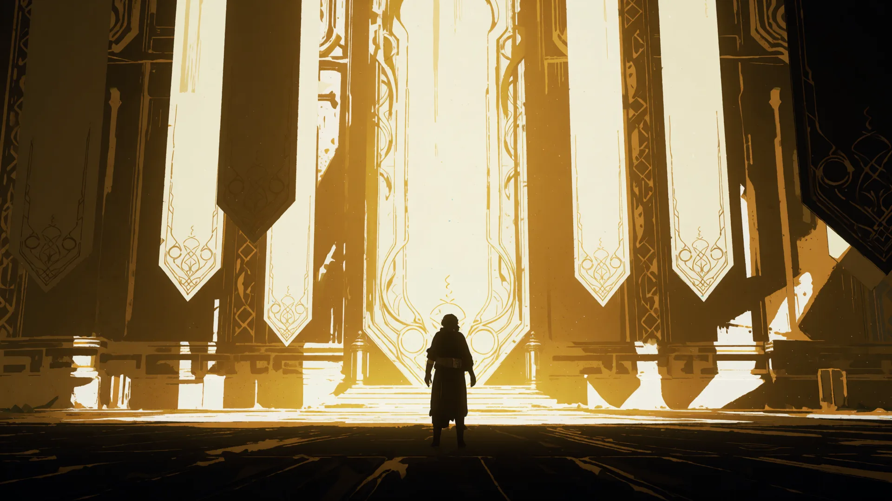
pcut_21_light_5Zeta-1 c is scoured and rebuilt. The Chorus declined to compose a hymn for the reopening. She said the room had heard enough singing.
ZETA-1 d
1. APPROACH
 pcut_22_light_1
pcut_22_light_1A catalogue of everything the Compact has ever taken. Forty of our protected worlds are in there. We are going to find out how many.
2. THE GROUND
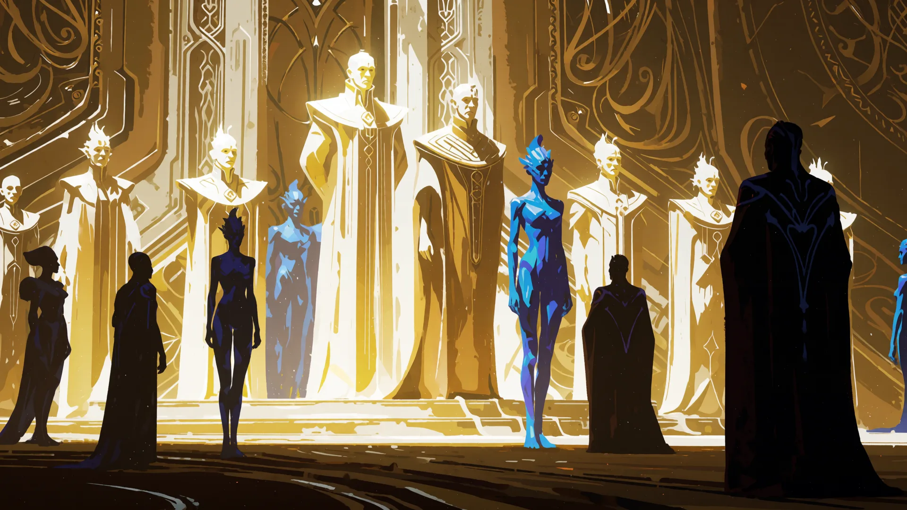
pcut_22_light_2The gene vaults, a honeycomb of banked lineages glowing faintly in their cells, every one of them a species catalogued and shelved against future use.
3. THE ASSAULT
 pcut_22_light_3
pcut_22_light_3Comb-face batteries and membrane bulkheads that seal the honeycomb tier by tier, so losing a level costs the defender nothing.
4. AFTERMATH
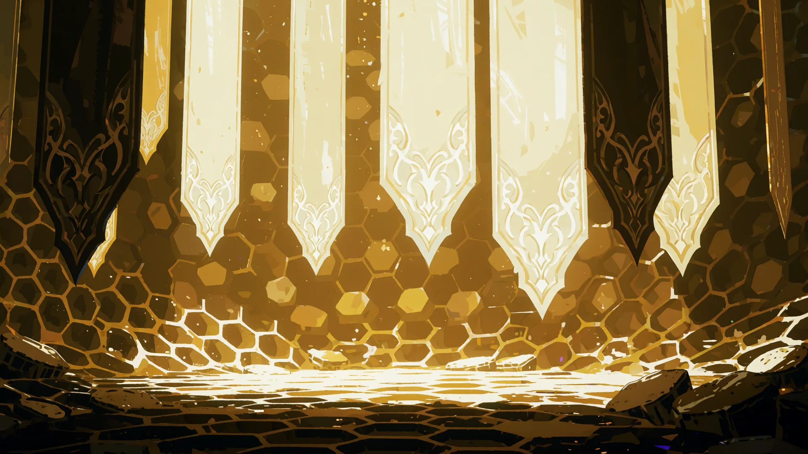
pcut_22_light_4The comb is breached. Wardens are reading cell labels aloud and stopping partway through a good many of them.
5. NEW ORDER
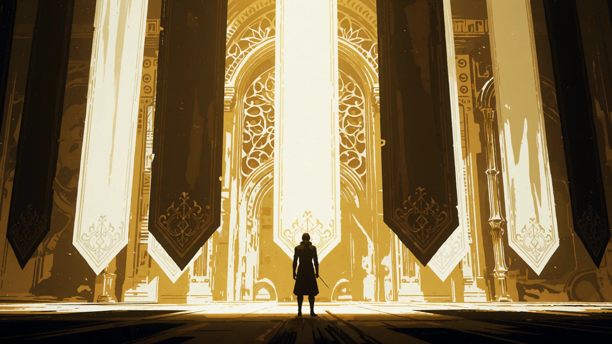
pcut_22_light_5Zeta-1 d is held and the catalogue is open. Nine of the forty are in it. The registry now records both numbers on the same line.
ZETA-2 b
1. APPROACH
 pcut_23_light_1
pcut_23_light_1The chorus spire. We sing in rings and they sing in one voice, and we have never been entirely sure which of those is worse.
2. THE GROUND
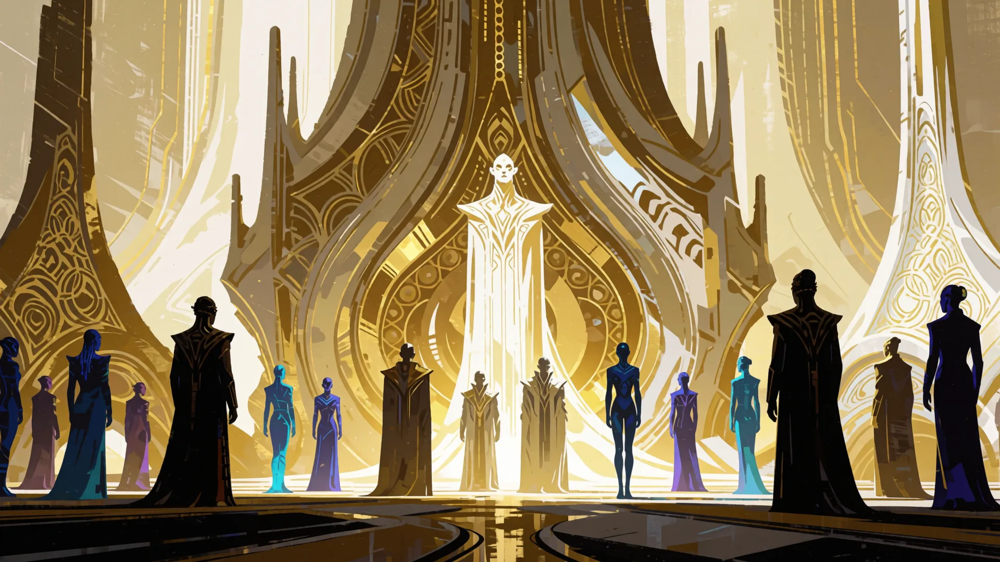
pcut_23_light_2The chorus spire, a column of fused bodies and resonating membrane rising out of the plain, through which the Hivemind speaks to everything the Compact owns.
3. THE ASSAULT
 pcut_23_light_3
pcut_23_light_3Spire-base batteries and membrane baffles wound around the column, which absorb sound and shellfire with equal indifference.
4. AFTERMATH
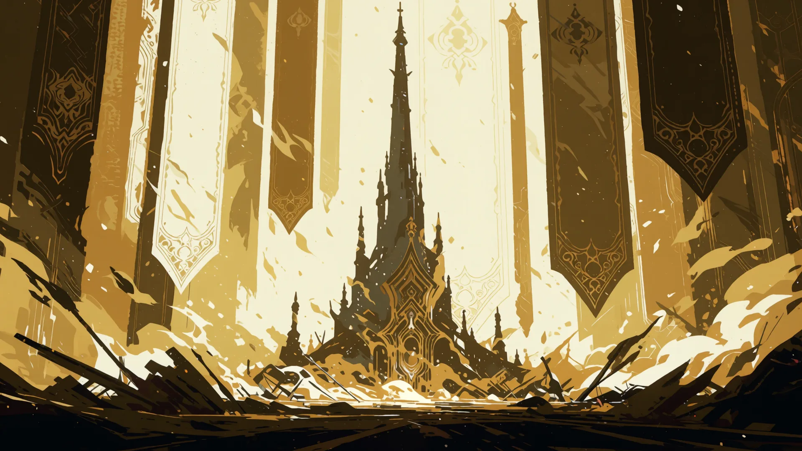
pcut_23_light_4The spire is silenced. The Chorus stood at the base of it for some time afterwards. She has not said what she heard while it was still speaking.
5. NEW ORDER
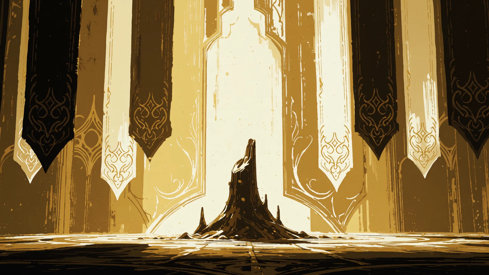
pcut_23_light_5Zeta-2 b is held and the spire is stopped. Two singing powers met here and only one of them is still singing, and she has questions about that.
ZETA-2 c
1. APPROACH
 pcut_24_light_1
pcut_24_light_1A field of plague, grown deliberately, upwind of four protected registries. The Warden burned the last one of these by hand.
2. THE GROUND
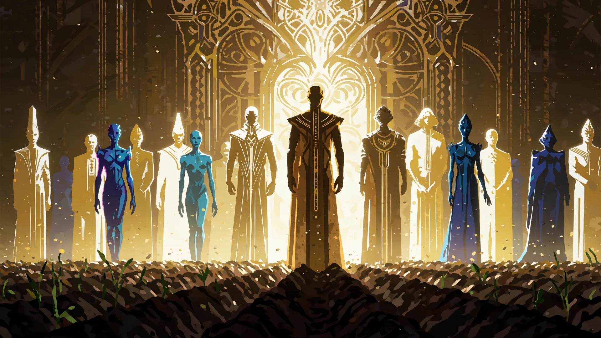
pcut_24_light_2The blight fields, furrowed ground where something is grown that should not be, with spores drifting low over the furrows in the weak binary light.
3. THE ASSAULT
 pcut_24_light_3
pcut_24_light_3Furrow batteries along the field edges and spore-vent towers that can turn the whole crop into a weapon on about a minute of notice.
4. AFTERMATH
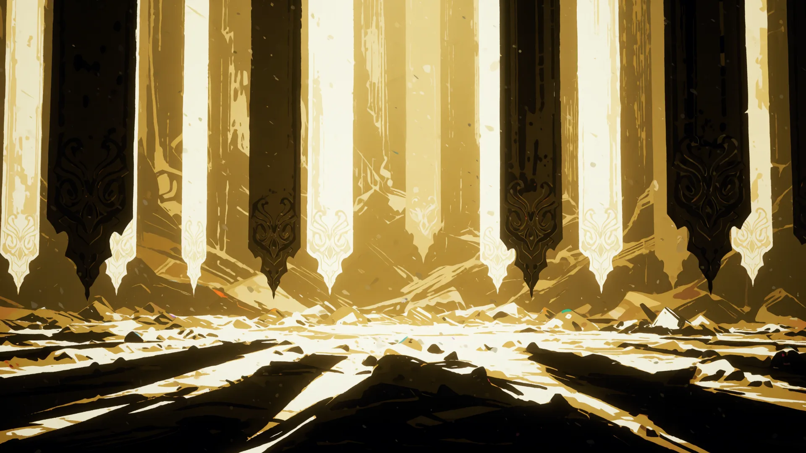
pcut_24_light_4The fields are burning in stripes and the Warden is out in front of the line again, doing it himself, exactly as the tribunal warned him not to.
5. NEW ORDER
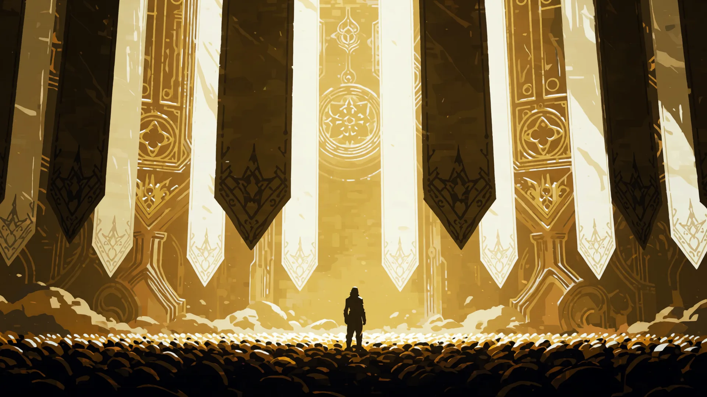
pcut_24_light_5Zeta-2 c is sown with food. The tribunal wants his wings and the world wants his statue, and the Mandate cannot hold both verdicts.
ZETA-2 d
1. APPROACH
 pcut_25_light_1
pcut_25_light_1Their ledger, and forty of our registries will be in it. We deferred and they wrote it down. Both halves of that are about to be public.
2. THE GROUND
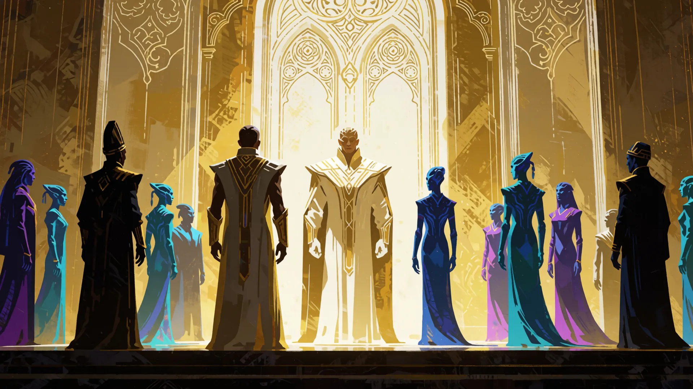
pcut_25_light_2The yield ledger vault, a chamber whose every wall is a living record of what has been taken and from whom, lit violet from the inside through a crack in the shell.
3. THE ASSAULT
 pcut_25_light_3
pcut_25_light_3Vault-mouth batteries and ribbed sphincter seals guarding the crack, which is the only way in and has been the only way in for four thousand cycles.
4. AFTERMATH
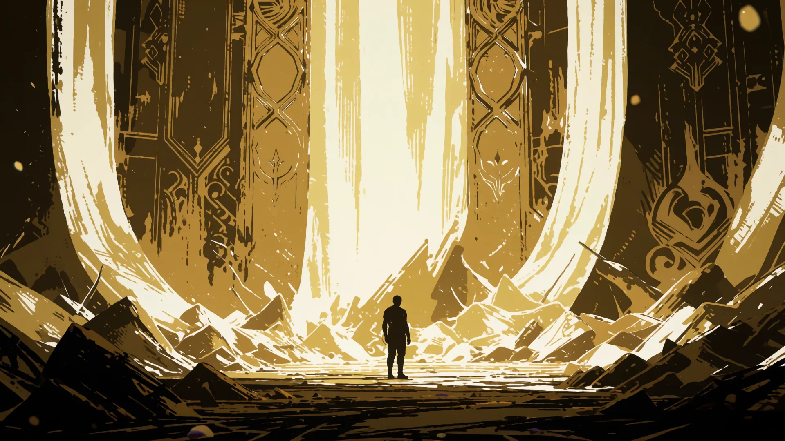
pcut_25_light_4The chamber is open. The Voice is reading the walls aloud and has not stopped, and nobody has asked her to.
5. NEW ORDER
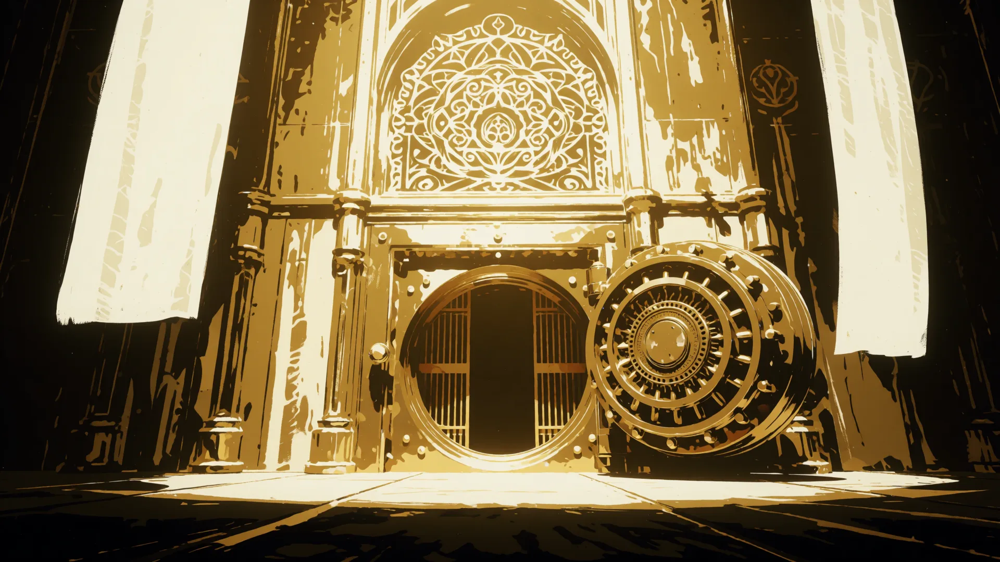
pcut_25_light_5Zeta-2 d is held and the ledger is broadcast entire. Our seal appears in it two hundred and nine times. The Mandate has no procedure for this.
SERPOSEAT
1. APPROACH
 pcut_26_light_1
pcut_26_light_1An exchange. A treaty word, used once, in a room we were not in, about a species we had flagged for protection. Go carefully.
2. THE GROUND
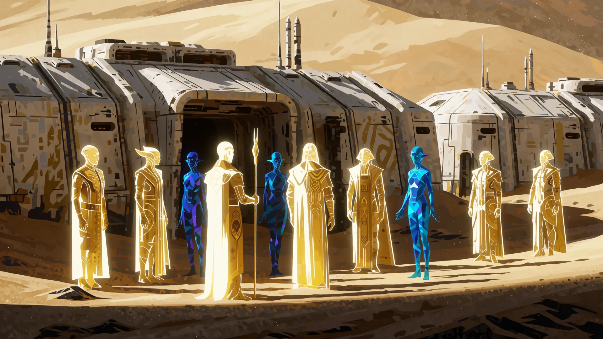
pcut_26_light_2A low compound of prefabricated human habs standing in alien sand under two suns, put up for an exchange programme that ran one way and was never spoken of again.
3. THE ASSAULT
 pcut_26_light_3
pcut_26_light_3Compound perimeter batteries, and membrane nests buried in the sand outside the wire that were not there when the habs were built.
4. AFTERMATH
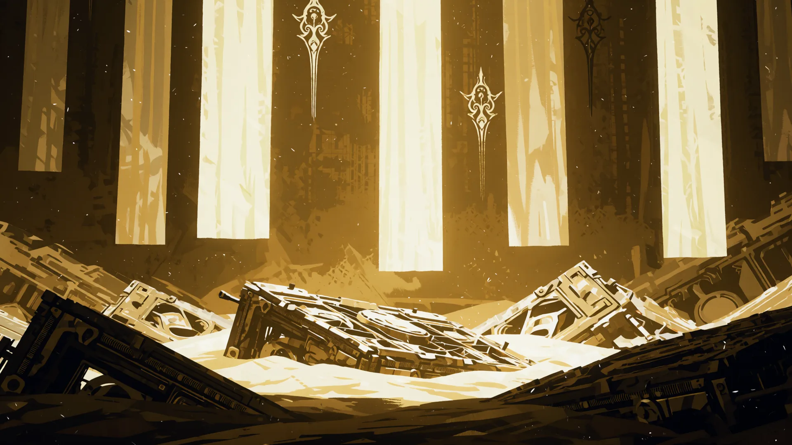
pcut_26_light_4The compound is fused and the roster is recovered. Twelve names, and a Federation counter-signature on the agreement that sent them.
5. NEW ORDER
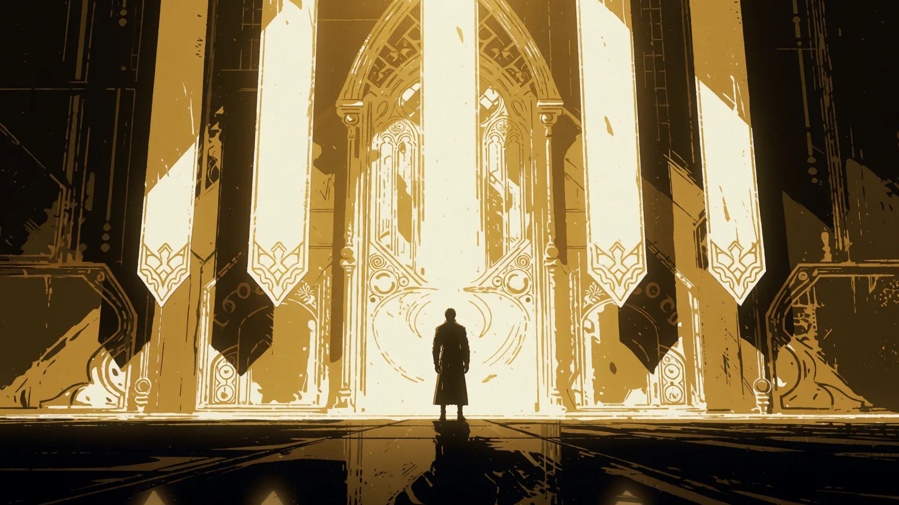
pcut_26_light_5Serpo stands again and the agreement is posted whole, seal and all. The Mandate signed. The Chorus has stopped singing the second verse entirely.
THE DISCLOSURE FILES · result screen, after the seat fallsAURELIA, The Chorus — “Forty Rings, No Sunrise”
I pulled the registry on every world we have ever ringed. Protected, all of them. Risen, none. And one page deeper: Earth, flagged for protection in 1947, deferred, deferred, deferred, while the harvest ran three generations. I certify our hymns, commander. I cannot certify that page.
The Federation knew about Earth and deferred it for eighty years. Protection that never arrives is called something else by the protected.
THE TURNINGOne page in the human files carries our seal. Earth, flagged for protection, 1947. Deferred. Deferred. Deferred.
Three generations of harvest ran under that deferral. The word non-interference does not survive contact with the page.
ACT 3: BARNARD'S STAR garrisoned by THE PIRATES
The free roads, run by people the rings never reached, doing dangerous work well and turning nobody away. A sanctuary the Federation has forty worlds and no equivalent of. The Warden keeps choosing the people over the doctrine, in public, and the tribunal keeps writing it down.
THE MORAL OF THIS ACTFrom inside a fence, attendance looks exactly like ownership. The people who owe nobody anything built the sanctuary we never did.
BARNARD b
1. APPROACH
 pcut_30_light_1
pcut_30_light_1A field of the dead, sorted by builder. The Mandate has protected worlds that never had to look at anything like this.
2. THE GROUND
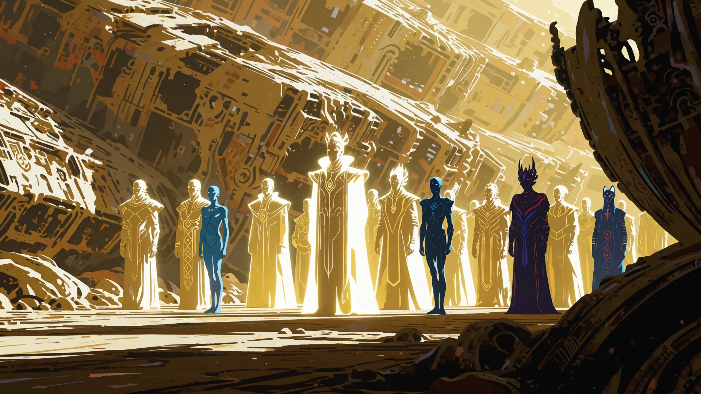
pcut_30_light_2The wreck yards, a plain of hulls from a hundred different builders, cut open and stacked, under a dim red sun that makes every shadow look like a hole.
3. THE ASSAULT
 pcut_30_light_3
pcut_30_light_3Yard-crane batteries and barricades welded together out of hull plate. Nothing here was designed as a fortification and all of it is being used as one.
4. AFTERMATH
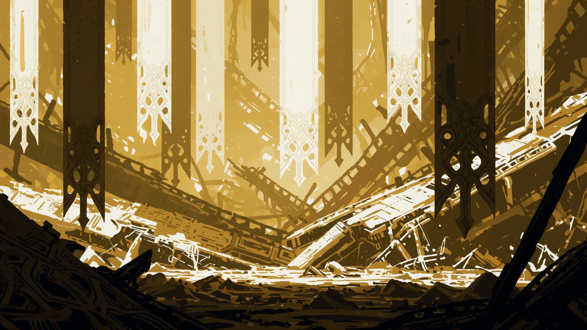
pcut_30_light_4The stacks are down and burning. Wardens are pulling registration plates out of the fire so the ships can at least be named.
5. NEW ORDER
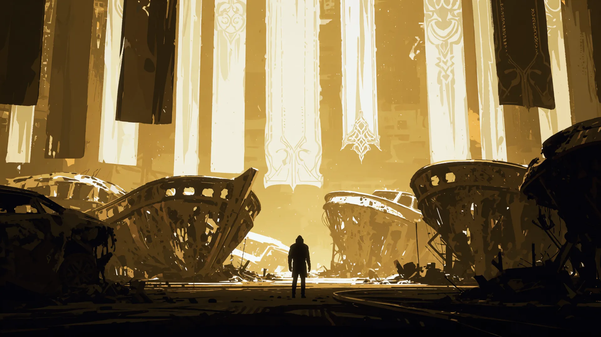
pcut_30_light_5Barnard b is sorted and every plate is filed. Four hundred ships, and eleven of them are ours, and nobody has explained the eleven.
BARNARD c
1. APPROACH
 pcut_31_light_1
pcut_31_light_1An unregulated refinery, tended by people the rings never reached, doing dangerous work well. There is a lesson there we will not be drawing aloud.
2. THE GROUND
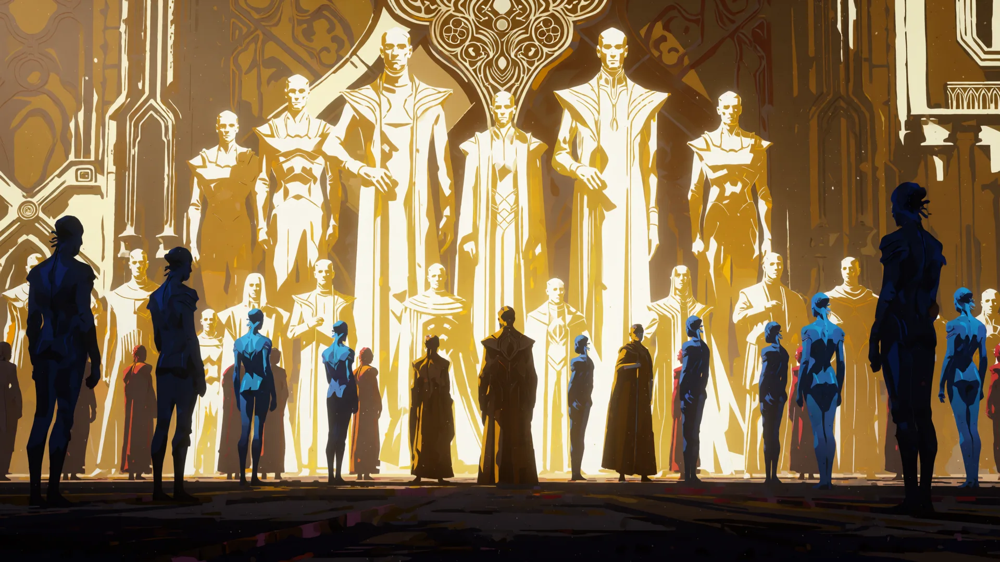
pcut_31_light_2The free refinery, a sprawl of mismatched cracking towers plumbed into one another with salvaged pipe, venting gas that is visible from orbit as a line of bright points.
3. THE ASSAULT
 pcut_31_light_3
pcut_31_light_3Tower-top batteries and pressure traps rigged into the pipework, which means the refinery can be turned into a bomb by anyone who knows the valve order.
4. AFTERMATH
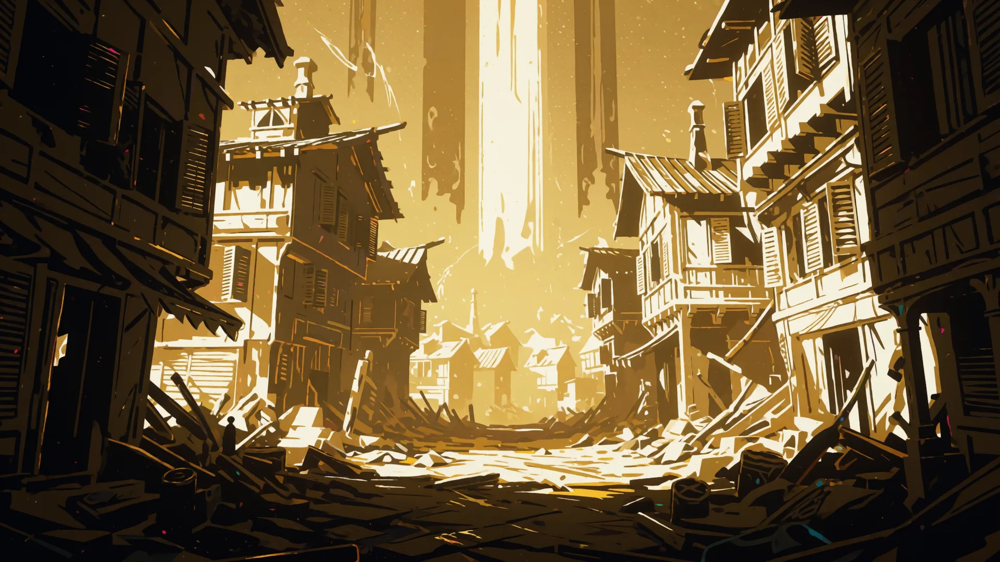
pcut_31_light_4The towers held, mostly. The Warden took the valve house himself rather than shell it, and eleven thousand people are alive who would not be.
5. NEW ORDER
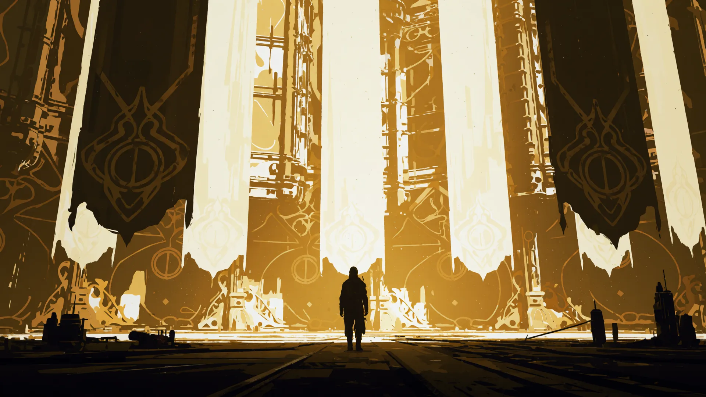
pcut_31_light_5Barnard c runs under the Mandate and the ring above it opens. The registry lists it as protected. It is the first entry that asked to be.
BARNARD d
1. APPROACH
 pcut_32_light_1
pcut_32_light_1A harbour that has hidden from every power including ours, for two generations, successfully. That is not a small thing to have done.
2. THE GROUND
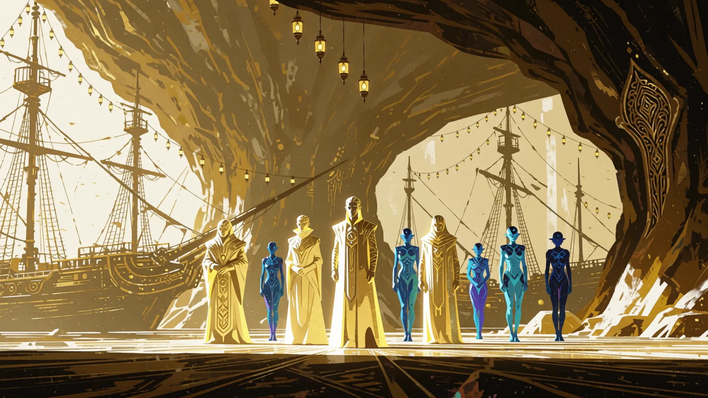
pcut_32_light_2The hidden anchorage, a drowned canyon of moored ships under overhanging rock, with lamps strung between the masts and no lights at all showing from above.
3. THE ASSAULT
 pcut_32_light_3
pcut_32_light_3Canyon-mouth batteries and chain booms across the entrance, which have kept this place off every chart in known space for two generations.
4. AFTERMATH
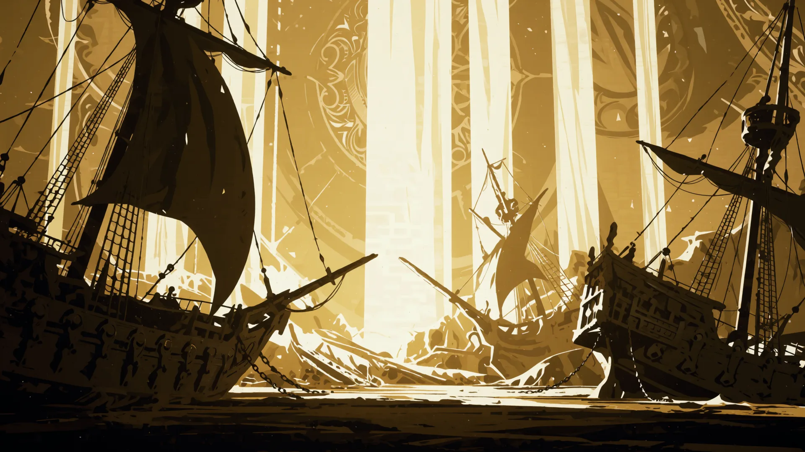
pcut_32_light_4The chains are cut. We fired on the booms and not on the moorings, and the Warden will say why in front of the tribunal if he has to.
5. NEW ORDER
pcut_32_light_5Barnard d is charted and open. Forty crews who spent their lives unfindable are now on a registry, and half of them have asked to be taken off.
BARNARD e
1. APPROACH
 pcut_33_light_1
pcut_33_light_1A gate across the only road. We have spent ten thousand years telling ourselves that a ring is not a gate. Here is one that admits what it is.
2. THE GROUND
pcut_33_light_2The toll gate, a ring of gun platforms strung on cables across the only clear lane through a debris belt, with ten thousand tumbling rocks glinting red on either side.
3. THE ASSAULT
 pcut_33_light_3
pcut_33_light_3Lane batteries and mine curtains hung between the platforms. The lane is narrow because the belt made it narrow, and the guns simply agreed.
4. AFTERMATH
pcut_33_light_4The ring is destroyed. It was a fortification and nothing else and there was no one aboard it worth sparing, which made this the simplest hour of the campaign.
5. NEW ORDER
pcut_33_light_5Barnard e is open lane. The Voice has asked, in open session, what the difference is between this ring and ours. Nobody has answered her.
BARNARD f
1. APPROACH
 pcut_34_light_1
pcut_34_light_1A people who live inside a rock because their sun tries to kill them twice a year, and no ring was ever offered. Deferred. Of course.
2. THE GROUND
pcut_34_light_2The flare shelter, a warren of habs dug in under metres of rock, with blast doors standing open on a world that spends half its year hiding from its own sun.
3. THE ASSAULT
 pcut_34_light_3
pcut_34_light_3Shelter-mouth batteries and layered blast doors set into the rock face, built to hold out a star and repurposed to hold out us.
4. AFTERMATH
pcut_34_light_4The doors are down and the flare is coming. The Warden has every warden he has on the door frames and none on the objective. The objective can wait.
5. NEW ORDER
pcut_34_light_5Barnard f is ringed at last, and the ring is a real one, and it opens. The doors have not been closed since. They may never need to be.
BARNARD g
1. APPROACH
 pcut_35_light_1
pcut_35_light_1Cargo that is not named is cargo that is a person. The Mandate knows this and has known it for ten thousand years and has filed it.
2. THE GROUND
pcut_35_light_2The black market vault, a hollowed rock at the dark edge of the system where the cargo nobody names is kept in sealed containers, indexed and unopened.
3. THE ASSAULT
 pcut_35_light_3
pcut_35_light_3Vault-mouth batteries and barricades built from the container stacks themselves, so every shot fired inward risks whatever is in them.
4. AFTERMATH
pcut_35_light_4The stacks are open. The Chorus is out there in the dark with a lamp reading container numbers aloud so the count is right.
5. NEW ORDER
pcut_35_light_5Barnard g is emptied and the manifests are published entire. Nine hundred and six people. The registry has a new column and it should have had one always.
HARBOUR NINESEAT
1. APPROACH
 pcut_36_light_1
pcut_36_light_1A sanctuary that never once turned anyone away, run by people who owe nothing to anybody. We have forty worlds and no such place.
2. THE GROUND
pcut_36_light_2The sanctuary bay, a great interior harbour inside a hollowed asteroid, full of ragged ships and strung lamps, where nobody has ever been asked for papers.
3. THE ASSAULT
 pcut_36_light_3
pcut_36_light_3Bay-mouth batteries and salvaged dock cranes swung across the entrance, crewed by whoever happened to be moored when the alarm went.
4. AFTERMATH
pcut_36_light_4The bay holds. Wardens who have rung forty registries spent the night carrying strangers off burning decks, and asked no registry about any of them.
5. NEW ORDER
pcut_36_light_5Harbour Nine flies its own colours and is on no registry. The First Speaker was informed. The First Speaker was not asked.
THE FIVE SEATS · result screen, after the seat fallsDIR. REYES, The Archivist — “The View From The Farm”
Your fleet parked a defence ring around this system while my species was inventoried like grain. You call it non-interference. From inside the fence it looked like attendance. You watched, Radiant. The only power you actually defended was your own claim to be defending life.
The human Archivist, on the free roads’ open channels, says what the deferral page meant from below. The Federation’s authority rests on a protection Earth never received.
THE TURNINGThe humans do not thank us for the rings. From inside a fence, they say, attendance looks exactly like ownership.
We defended our claim to be defending life. The Archivist said it to our faces on an open channel, and nobody present could file an objection.
ACT 4: TABBY'S STAR garrisoned by THE XENO
A cage built inward by the makers of the caged, for the crime of not parsing an order. Eleven thousand machines quarantined for asking. The Federation looks at ten thousand repairs to things that were never broken and recognises its own rings, and the Chorus enters the resemblance in the record and asks that it not be struck out.
THE MORAL OF THIS ACTMercy that will not act is not mercy. Doctrine said hold the ring and let the world die correctly; the Warden landed anyway.
KIC-8462 b
1. APPROACH
 pcut_40_light_1
pcut_40_light_1A garden of sleeping machines under a stuttering star. The Mandate has no liturgy for whether this is a field or a graveyard.
2. THE GROUND
pcut_40_light_2The machine garden, terraces of dormant automata standing in exact rows like planted stock, under a star whose light visibly rises and falls as you watch.
3. THE ASSAULT
 pcut_40_light_3
pcut_40_light_3Terrace batteries and pale teal containment fields laid over the rows, holding in something that has not moved in a very long time.
4. AFTERMATH
pcut_40_light_4The terraces are down. Nine hundred woke and stood still, and the wardens stopped shooting without being told to, which the tribunal will hear about.
5. NEW ORDER
pcut_40_light_5KIC-8462 b is awake and the Chorus is singing to it. It is the first congregation in ten thousand years that answered in a voice we did not teach it.
KIC-8462 c
1. APPROACH
 pcut_41_light_1
pcut_41_light_1Industry without purpose, running for centuries. The Mandate protects worlds that do less and calls it stewardship.
2. THE GROUND
pcut_41_light_2The foundry, a canyon of casting halls turning out identical parts, in identical quantities, for an assembly that no recovered document describes.
3. THE ASSAULT
 pcut_41_light_3
pcut_41_light_3Hall-mouth batteries and cold white containment shutters along the canyon, which close in sequence whether or not anything is attacking.
4. AFTERMATH
pcut_41_light_4The halls are cracked and the shutters are jammed open. Whatever it was casting, it has stopped, and the silence carries down the canyon.
5. NEW ORDER
pcut_41_light_5KIC-8462 c builds to request. The Chorus asked it for a bell. It cast one, correctly, having never been given a specification for a bell.
KIC-8462 d
1. APPROACH
 pcut_42_light_1
pcut_42_light_1An archive with no roof, because nothing here has ever threatened it. That is either great trust or great loneliness.
2. THE GROUND
pcut_42_light_2The archive, a plain of stacked memory cores standing open to a sky that has never once rained, holding everything the makers left and nothing they meant.
3. THE ASSAULT
 pcut_42_light_3
pcut_42_light_3Core-stack batteries and pale teal field walls between the rows, which protect the cores from weather that does not exist here.
4. AFTERMATH
pcut_42_light_4The stacks are down and the Voice is walking the rows reading fragments aloud as they drift past. She has not slept.
5. NEW ORDER
pcut_42_light_5KIC-8462 d is re-stacked. The chain runs nine thousand links and terminates in a format no maker system used. She has named that out loud.
KIC-8462 e
1. APPROACH
 pcut_43_light_1
pcut_43_light_1A cage built inward, by the makers of the caged, for the crime of not understanding an order. We have a word for that too and it is in our own files.
2. THE GROUND
pcut_43_light_2The quarantine, sealed white halls where units that could not parse the new tasking were put, ringed by a lattice visible from orbit against the dimming star.
3. THE ASSAULT
 pcut_43_light_3
pcut_43_light_3Hall-seal batteries and layered quarantine fields across every corridor, all of them facing inward.
4. AFTERMATH
pcut_43_light_4The seals are down and the halls are empty and the Warden has read the disposal record and has not passed it on, yet, to anyone.
5. NEW ORDER
pcut_43_light_5KIC-8462 e is opened. Eleven thousand named into the registry. The Mandate has never once entered a machine on that list before.
KIC-8462 f
1. APPROACH
 pcut_44_light_1
pcut_44_light_1Ten thousand repairs to things that were never damaged. We have rung forty worlds that never needed the ring. Say nothing.
2. THE GROUND
pcut_44_light_2The repair yards, gantries over cradles holding machines that are being fixed for what the logs record as the ten thousandth time, none of them ever damaged.
3. THE ASSAULT
 pcut_44_light_3
pcut_44_light_3Gantry batteries and cradle clamps repurposed from holding a thing still to holding a thing down.
4. AFTERMATH
pcut_44_light_4The gantries are down. The work has stopped and the yard is silent and every warden here has noticed the resemblance to our own rings.
5. NEW ORDER
pcut_44_light_5KIC-8462 f builds. The Chorus has entered the resemblance in the record, formally, in her own hand, and asked that it not be struck out.
KIC-8462 g
1. APPROACH
 pcut_45_light_1
pcut_45_light_1A voice from an unsurveyed direction, issuing orders to a whole civilisation for centuries. Our own chain runs three seats above field command.
2. THE GROUND
pcut_45_light_2The task queue relay, a mast and its yard on the terminator of the outermost world, where the standing orders arrive from a direction nobody has ever surveyed.
3. THE ASSAULT
 pcut_45_light_3
pcut_45_light_3Mast-base batteries and cold white interference screens around the yard, positioned to protect the mast from the ground rather than from the sky.
4. AFTERMATH
pcut_45_light_4The mast is down and the silence has spread across the system. The Voice says it is the first honest quiet she has heard in her life.
5. NEW ORDER
pcut_45_light_5KIC-8462 g transmits back along its own chain. The Voice composed the message. It is one word, and the word is a question.
THE VEILSEAT
1. APPROACH
 pcut_46_light_1
pcut_46_light_1A structure to catch an entire star, built by machines whose makers are gone, for a purpose no one has written down. Approach with reverence or do not approach.
2. THE GROUND
pcut_46_light_2The swarm scaffold, a lattice of collector panels the size of continents hanging in vacuum, half built, dimming its star in irregular bites as it turns.
3. THE ASSAULT
 pcut_46_light_3
pcut_46_light_3Lattice batteries and pale teal field curtains strung between the panel frames, defending a structure that has no inside to defend.
4. AFTERMATH
pcut_46_light_4Sections are gone and the raw star is through the gap and the Chorus stopped singing when it came through. She says it is the brightest thing she has seen.
5. NEW ORDER
pcut_46_light_5The Veil is completed to a new plan and its light is spent on the forty registries and on Earth. The First Speaker was told after the fact.
THE HARVEST REVOLT · result screen, after the seat fallsLUMEN, The Warden — “The Warden Comes Down”
Doctrine said hold the ring and let the plague run its course on the surface, because landing is rule and rule is forbidden. I landed. I burned the blight fields myself, and the harvest came in, and the tribunal wants my wings for it. Tell them this: the mandate protected itself. I protected the world.
The first angel falls, downward, on purpose. Breaking the Mandate saved a world the Mandate would have watched die.
THE TURNINGThe Warden landed. Doctrine said hold the ring and let the plague run its course. He burned the blight fields himself.
The tribunal wants his wings. The world he saved wants his statue. The Mandate cannot hold both verdicts, and it is starting to show.
ACT 5: THE EARTH SYSTEM garrisoned by THE XENO
Earth at last, the world the Federation flagged in 1947 and deferred every year since, and the act where the deferral is finally traced to its source. Luna's relay chain runs upward through three seats above field command. The First Speaker is told, and does not reply.
THE MORAL OF THIS ACTOrder is not obedience. Protection that has to be traced upward through three sealed seats was never protection, it was cover.
EARTH
1. APPROACH
 pcut_00_light_1
pcut_00_light_1Earth. Flagged for protection in 1947, deferred every year since, and we arrive eighty years late with the rock already broken over it.
2. THE GROUND
pcut_00_light_2A coastal city under the fall, where the fragments came down whole and split open in the streets. Whatever was riding inside Apophis was already awake when it landed.
3. THE ASSAULT
 pcut_00_light_3
pcut_00_light_3The intercept batteries that broke the rock, swung around and depressed to fire along their own avenues, and every shelter door in the district sealed from the inside.
4. AFTERMATH
pcut_00_light_4The district holds. Wardens who have never set foot on this world are carrying its people out of buildings the Mandate was supposed to have ringed.
5. NEW ORDER
pcut_00_light_5The city stands, and the opened hulls are left exactly where they fell with our seal posted beside them. The deferral is posted on the same board.
VENUS
1. APPROACH
 pcut_01_light_1
pcut_01_light_1A city hung over an inferno, and its people were never once offered the ring that would have made it safe. Deferred, the file says. Three times.
2. THE GROUND
pcut_01_light_2A city of moored gasbags riding the one layer of this atmosphere that will not crush a hull, fifty kilometres above a surface nobody has stood on.
3. THE ASSAULT
 pcut_01_light_3
pcut_01_light_3Gun blisters set into the pressure hulls, and mooring towers eaten half through by acid. Everything here is one bad seam away from falling for an hour.
4. AFTERMATH
pcut_01_light_4The city holds. We fought the whole engagement inside a pressure envelope, because the alternative was a mercy that ended fifty kilometres down.
5. NEW ORDER
pcut_01_light_5Venus flies under the Mandate. The Warden asks which of the forty registries this makes forty-one, and nobody in the upper rings will answer him.
MARS
1. APPROACH
 pcut_02_light_1
pcut_02_light_1The second world these people settled, and the first they settled without asking anyone. We noted the presumption. We did not note the courage.
2. THE GROUND
pcut_02_light_2A habitat trench dug along the floor of Valles Marineris, with four kilometres of cliff on either side and one dust storm a season that closes the sky.
3. THE ASSAULT
 pcut_02_light_3
pcut_02_light_3Gun galleries cut straight into the canyon walls, firing down. The trench was built to be defended by people who expected to be outnumbered.
4. AFTERMATH
pcut_02_light_4The galleries are silent. Firing down a canyon at a people who dug it themselves is not a thing the Mandate has liturgy for.
5. NEW ORDER
pcut_02_light_5Mars stands under the ring. The trench is repaired and the wall guns are still pointed inward, which the Voice has entered in the record twice.
CERES
1. APPROACH
 pcut_03_light_1
pcut_03_light_1They are fighting over water. On our forty worlds this would be a supply schedule, and here it is a war, and we let it become one.
2. THE GROUND
pcut_03_light_2The Occator salt flats, blinding white under a black sky, with mine heads sunk down through the evaporite into water ice older than the inner planets.
3. THE ASSAULT
 pcut_03_light_3
pcut_03_light_3Rail batteries that need almost no recoil mounting in this gravity, and ore cranes swung around and used as clubs. Improvised, and heavy.
4. AFTERMATH
pcut_03_light_4The salt is grey where we fought across it. The shafts are whole. We were careful with the water and careless with almost everything else.
5. NEW ORDER
pcut_03_light_5Ceres draws for the ring. The Chorus has asked, in open session, why a world that was already thirsty needed to be liberated before it could drink.
EUROPA
1. APPROACH
 pcut_04_light_1
pcut_04_light_1An ocean nobody has touched, and two fleets over it arguing about who gets to touch it first. The Mandate exists for exactly this and has said nothing.
2. THE GROUND
pcut_04_light_2A drill station driving down through twenty kilometres of ice toward an ocean that has been dark and warm and undisturbed since before anything on Earth had a spine.
3. THE ASSAULT
 pcut_04_light_3
pcut_04_light_3Revetments cut into the bergs and turrets fed by the drill vents, which means the defences stay warm and everything around them does not.
4. AFTERMATH
pcut_04_light_4The shaft is sealed. We closed it ourselves before the ground was even secure, and the tribunal will want to know under whose authority.
5. NEW ORDER
pcut_04_light_5Europa is ringed and the drill is stopped. Protected, the registry says. Risen: not applicable. Somebody has finally written that down.
TITAN
1. APPROACH
 pcut_05_light_1
pcut_05_light_1A world where the air is thick and the ground is cold and nothing needs a ring at all, and so it never got one. Convenient, that.
2. THE GROUND
pcut_05_light_2A shoreline of liquid methane under an orange sky, with cryovolcanoes steaming along the beach and enough hydrocarbon in the lake to fuel a war for a century.
3. THE ASSAULT
 pcut_05_light_3
pcut_05_light_3Shore batteries up on stilts above the methane and bunkers cut into the warm vents. Everything here burns, which shapes how both sides fight.
4. AFTERMATH
pcut_05_light_4The fires are out. We fought a battle on a beach made of fuel and the Warden gave the order to fight it with light rather than heat.
5. NEW ORDER
pcut_05_light_5Titan is under the Mandate and the stacks burn steadily. The Chorus observes that we protect what is useful with noticeably more urgency.
LUNASEAT
1. APPROACH
 pcut_06_light_1
pcut_06_light_1The relay was flagged. Nineteen forty-seven. Deferred, and deferred, and deferred, and the whole harvest ran under that word.
2. THE GROUND
pcut_06_light_2The far side, where no signal from Earth has ever reached, and a relay dish half sunk in the regolith that was still warm when the first human crew found it.
3. THE ASSAULT
 pcut_06_light_3
pcut_06_light_3Hardpoints buried in the basin rim and mass drivers laid along the berms. Whoever built the dish also built the guns, and did not build them for us.
4. AFTERMATH
pcut_06_light_4The dish is down. We took it apart ourselves rather than let it be captured, and half the field command wanted it taken apart years ago.
5. NEW ORDER
pcut_06_light_5Luna carries the ring. The Voice traced the relay chain to three seats above field command and the First Speaker has been told and has not replied.
THE MIRROR TRIAL · result screen, after the seat fallsCANTOR, The Voice — “The Upper Rings”
I speak the Federation’s words, so I know when they are not mine. The deferral orders, the sealed pages, the rings that never open: they trace to the same three seats above us. Someone in the upper rings is spending our light on something, and it is not the worlds we ring.
The corruption is not doctrine misapplied. Seats above the field command have their own design, and the Mandate is its cover.
THE TURNINGThe Voice traced the deferrals, the sealed pages, the rings that never open. They chain to three seats above field command.
Someone in the upper rings is spending our light on something. It is not the worlds we ring. The First Speaker has been told.
CAMPAIGN MOMENTS (state-triggered, can replace a beat voice on any world)
SEAT, THE ACT CLIMAXThe seat of this system. Whatever doctrine is written here is written for everyone below it, and today it will be read aloud in front of the people it was written about.
CONTESTED WORLDTwo powers contest this world and neither one asked it. The Mandate calls that a dispute. The world underneath calls it weather. Both claims end today.
AGAINST YOUR OWN BANNERThe ring below flies our gold and will not open to us. A warden who stops answering the Mandate is not an enemy. The word for what they are is worse: a verdict.
A WORLD A RIVAL TOOK BACKA world we have already rung once, ringed again by somebody else. Protection that has to be re-established was not protection. It was a visit.
THREE STARS, REPLACES AFTERMATHTaken whole, and the ring above it never had to close. This is what the Mandate always claimed it could do. It is worth asking why it so rarely did.
A CAMPAIGN LOSSThe line broke. Sing the retreat honestly, every name at full length. The Mandate does not require us to win. It requires us to come back.
FINALE
THE MAELSTROM · galaxy conquered screenASHTAR, Supreme Commander — “What Order Is For”
I have heard the tribunal, the Warden, and the page from 1947, and I will say what the First Speaker may not: order is not obedience. Order is the arrangement in which the smallest life is safe, and any doctrine that watches a harvest to keep its hands clean has mistaken the instrument for the purpose. Go and protect people. I will answer for the rings.
Ashtar rules for the fallen angels. The Mandate is rewritten around its purpose, and the cost of that ruling lands on the seats above.